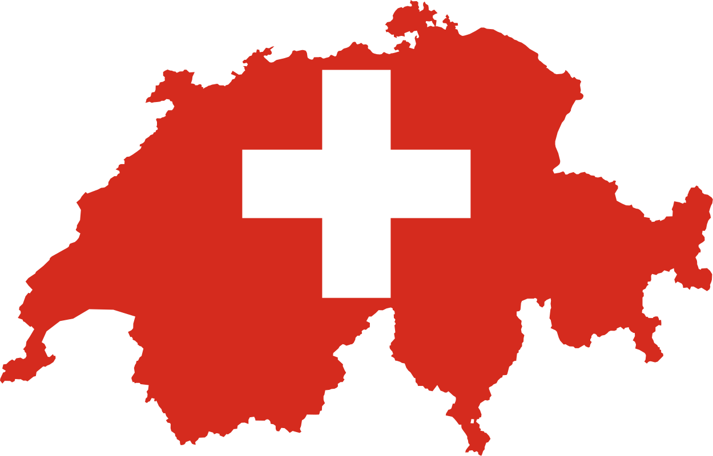
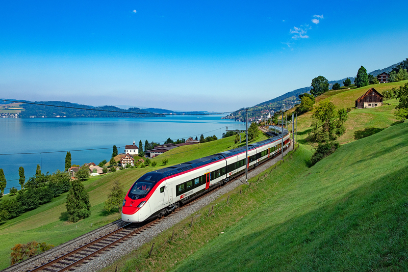
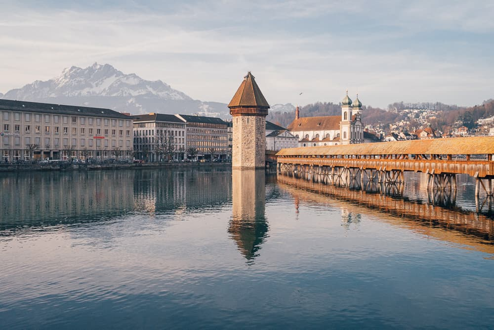
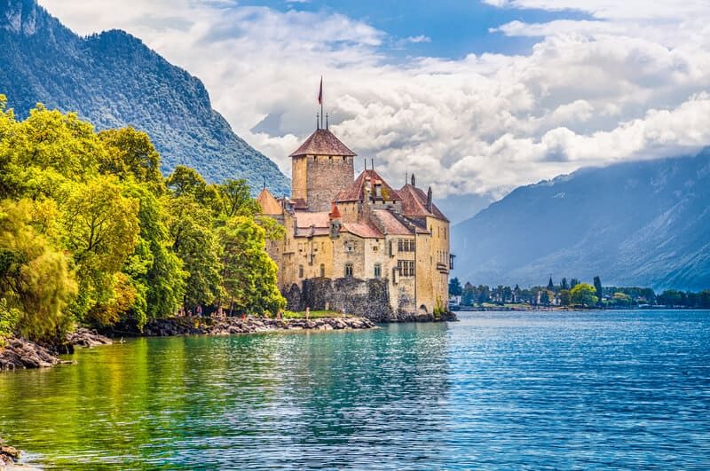

Get Natural in Switzerland

Switzerland is a mountainous Central European country, home to numerous lakes, villages and the high peaks of the Alps.
Its cities contain medieval quarters, with landmarks like capital Bern’s Zytglogge clock tower and Lucerne’s wooden chapel bridge.
The country is also known for its ski resorts and hiking trails.
Banking and finance are key industries, and Swiss watches and chocolate are world renowned.
Switzerland’s rugged topography and multicultural milieu have tended to emphasize difference.
People living in close proximity may speak markedly distinct, sometimes nearly mutually unintelligible dialects of their first language,
if not a different language altogether. German, French, Italian, and Romansh all enjoy national status, and English is spoken widely.
Invisible lines separate historically Protestant from historically Roman Catholic districts, while the tall mountains of the
Saint Gotthard Pass separate northern from southern Europe and their diverse sensibilities and habits. Yet,
Switzerland has forged strength from all these differences, creating a peaceful society in which individual rights are carefully
balanced against community and national interests.
How to Get Around Switzerland

Public Transit – Cities and towns in Switzerland are incredibly well connected with trams, buses, funiculars, trains, etc.
Each mode of transportation is safe, clean, and reliable. A single fare will usually cost between 2.50-5 CHF ($2.50-5 USD) depending on
the length of time and number of zones you travel.
Consider getting a Swiss Half Fare Card. It will allow you to travel by train, bus, boat, and most mountain railways at half the price
for one full month, and it only costs 120 CHF ($121 USD). This will only be cost effective if you intend to spend more than
240 CHF ($242 USD) on public transportation.
Trains – Train is the best way to travel in Switzerland, and is the most preferred method for locals.
It’s economical and efficient. For example, Bern to Geneva (a two-hour train) costs around 30 CHF ($30 USD).
A two-hour trip from Zurich to Interlaken is about 35 CH ($35 USD), while a 1.5 hour trip from Zurich to Bern is around 25 CH ($25 USD).
Expect to pay anywhere between 30-50 CHF ($30-50 USD) for a second-class train ticket between cities.
As mentioned above, if you plan on doing a lot of train travel, consider the Swiss Travel Pass or the Half Fare Card.
Bus – Flixbus offers a few routes around the country.
A 90-minute ride from Zurich to Bern starts at 13 CH ($13 USD), while a 5-hour journey from Zurich to Geneva starts at 26 CH ($26 USD).
Hitchhiking – itchhiking in Switzerland is a great way to get around, although it’s legal to hitchhike on motorways
(it’s fine to do at gas stations though). It’s a common practice in the mountain regions and country areas,
where public transit isn’t as readily available. Hitchwiki.org is a great resource.
Ridesharing – Using a ridesharing service like BlaBlaCar is one of the best ways to get around the country, although it
does require some flexibility! It lets you share rides with vetted local drivers by pitching in for gas.
You simply request a seat, they approve, and off you go! It’s a cheaper and more interesting way travel than by bus or train!
Places to Visit
Lucerne

Lucerne (in German, Luzern) is a top spot for tourists.
Famed for its music concerts, this quintessential Swiss town lures renowned soloists, conductors, and orchestras to
its annual International Music Festival. The Culture and Convention Center is home to one of the world's leading concert halls.
One of the city's most famous landmarks is the Chapel Bridge, built in the 14th century.
In a small park, lies the famous Lion Monument, a poignant sculpture of a dying lion, which honors the heroic death of
Swiss Guards during the attack on the Tuileries in the French Revolution. History buffs will enjoy the Swiss
Transport Museum with extensive exhibits on all forms of transport, including air and space travel, railroad locomotives, and a Planetarium.
Lake Geneva

Lake Geneva, Europe's largest Alpine lake, straddles the Swiss/French border, and laps at the shores of some of Switzerland's most popular cities.
The city of Geneva (in French Genève; in German Genf) sits between pretty snow-capped peaks at the point where the Rhône spills into Lake Geneva.
This French-speaking "capital of peace" is the European seat of the United Nations and exudes a pleasing blend of French joie de vivre and Swiss structure.
Promenades, parks, and gardens surround the lake, and the old town is a lovely spot to stroll among the historic buildings.
The Jet d'Eau, a fountain in Lake Geneva shooting water 150 meters into the air, is a famous landmark.
Cultural attractions include the Opera House and the Grand Théâtre, which stages international acts.
Chateau de Chillon, Montreux

On the shores of Lake Geneva, near Montreux, the Chateau de Chillon (Chillon Castle) has inspired artists and writers for centuries.
Lord Byron, Jean Jacques Rousseau, and Victor Hugo are among the luminaries who have written about this architectural treasure.
Once the stronghold of the Counts and Dukes of Savoy from the 12th century, the complex encompasses about 25 buildings clustered around three courtyards.
Highlights include the Great Halls, with magnificent views of Lake Geneva; the Gothic underground rooms; the Chapel,
adorned with 14th-century paintings; and the Camera Domini, a bedroom occupied by the Duke of Savoy decorated with medieval murals.